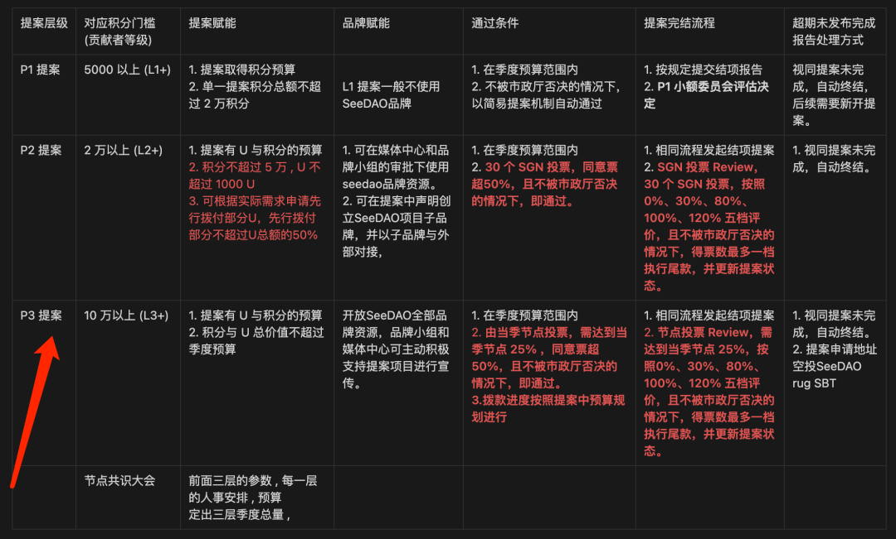

SeeDAO 第二季节点共识大会将于今晚（2月24日）晚9点开始，会议为期三天，今天我们带大家来看一看本次节点共识大会相关的重要提案。
该类提案共计 8 条，根据大会流程安排，目前均已投票完毕，这意味着第一季市政厅的工作评估已经完成。关于各小组具体的评估结果，请大家参见下述具体链接：
🔗 SIP-46：战略小组季度工作评估
🔗 SIP-47：财务小组季度工作评估
🔗 SIP-48：治理小组季度工作评估
🔗 SIP-49：品牌小组季度工作评估
🔗 SIP-50：外联小组季度工作评估
🔗 SIP-51：媒体中心季度工作评估
🔗 SIP-52：运营小组季度工作评估
🔗 SIP-53：SeeShore 大理季度工作评估
第二季岗位候选人实力强劲，在对第一季工作总结思考的基础上，个个摩拳擦掌，期望在新一季里有所作为。根据第二季市政厅架构，此类提案按照小组分为三个，分别是：
🔗 内部治理小组岗位竞选
🔗 对外品牌小组岗位竞选
🔗 技术小组岗位竞选
此类提案将于周五晚上会议期间开启投票，至周六晚上第二轮会议结束为止。
🔗 市政厅第二季总预算
市政厅预算提案总是最受人关注的，本提案依照前期市政厅精简方案而设定，财务小组特别制作了组图供大家快速阅读：
🔗 修订治理元规则第二版 · 第二轮投票
此提案源自上一季节点共识大会，根据元规则：
截至目前，本次共有 56 位 SeeDAO 成员 Claim 节点资质，预期需要至少 37 位投赞同票方可通过此提案。
🔗 第三季节点资格门槛设置
根据上一季投票，本季节点要求是 20000 活跃积分 + 3000 当季积分，本季的投票结果将决定下一季节点的资格。
第一季可 claim 节点人数 77 人，实际 claim 节点 46 人；第二季可 claim 节点人数 72 人，实际 claim 节点 56 人。
总体而言，节点活跃度有比较明显的上升，那么这一季的节点们会对下一季的资格投出什么样的结果呢？大家拭目以待。
🔗 治理手册变动
该提案是第一季市政厅运作过程中发现需要对治理手册变动的内容。
重要内容提示：
根据SIP-54：https://forum.seedao.xyz/thread/search-42436

节点从授权性质的投票逐渐向实际参与重要提案的方向转变，当季节点们会参与到P3级别提案和结案的投票工作中，为了与元规则所设的治理挖矿激励规则相符合，治理手册变动中最重要的部分是将治理挖矿涉及的范围，从节点共识大会的提案投票，扩大到大会提案投票+P3相关投票。
以上为本季节点共识大会相关的所有重要提案，欢迎社区内的成员与社区外的朋友共同关注。
同时，在此提醒 56 位第二季节点成员，抽空提前过目提案相关内容，为大会投票工作做好准备。

撰文：咖啡
排版：Vera
审核：SuanNai